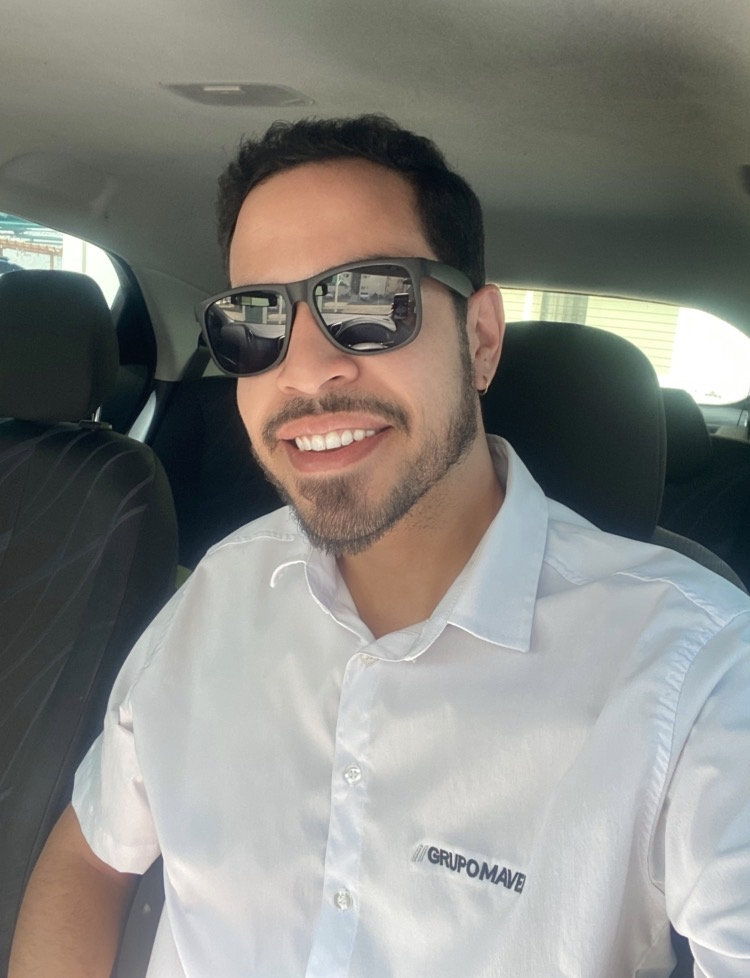
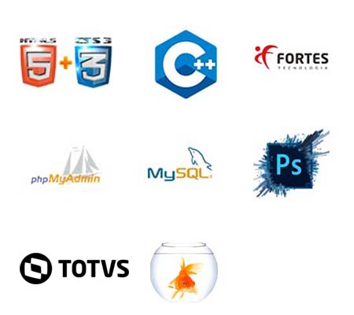

Computação > Contabilidade
MEU WEB SITE
Por Daniel Damásio
Desde em 13/06/2020
QUEM EU SOU
Sou um eterno amante de tecnologia. Desenvolvi este website para contar minha história. Comecei o curso de Ciência da Computação na Faculdade de Petrolina Facape no segundo semestre de 2019 e, durante a graduação, cursei a disciplina de Contabilidade Básica. Foi aí que me apaixonei por Contabilidade.

Computação
Contabilidade
FORMAÇÃO ACADÊMICA
Graduado em Ciências Contábeis pela Faculdade de Petrolina - FACAPE, em Petrolina-PE, em 2025.
Cursei Ciência da Computação até o 6º período na Faculdade de Petrolina – FACAPE, em Petrolina-PE, (sendo um período, na Faculdade FPB Faculdade Internacional da Paraíba em João Pessoa-PB).
MINHAS HABILIDADES
| Conhecimento em Informática e Computação | Pacote Office |
| Facilidade no aprendizado para utilização de sistemas | Devido a experiência em desenvolvê-los no curso de computação |
| Cálculos matemáticos | |
| Aptidão | Comunicação |
| Processos | |
| Banco de Dados | SQL |
MINHAS TECNOLOGIAS
Aqui estão algumas das Tecnologias que estudei, e tenho dominio em minha carreira de eterno aluno.

O QUE IREI FAZER POR SUA EMPRESA
Eu não prometo ser 100% assertivo na execução de todas as atividades em todas as vezes, mas garanto dar o meu melhor todos os dias para que eu chegue lá.